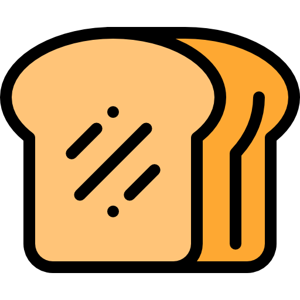

Bread Pun Generator

Generate a new pun
Like Me!
Likes:
0
This extension counts the number of times the button has been clicked or 'likes'.
This way the user can interact with the Bread Pun Machine and generate a positive feedback for the quote machine.